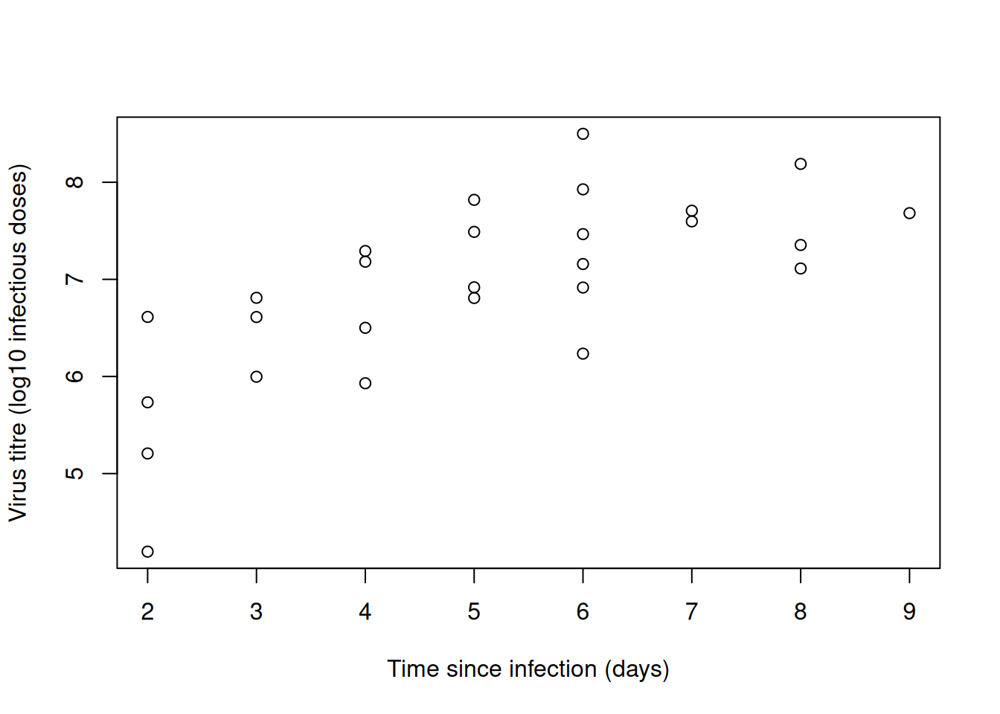
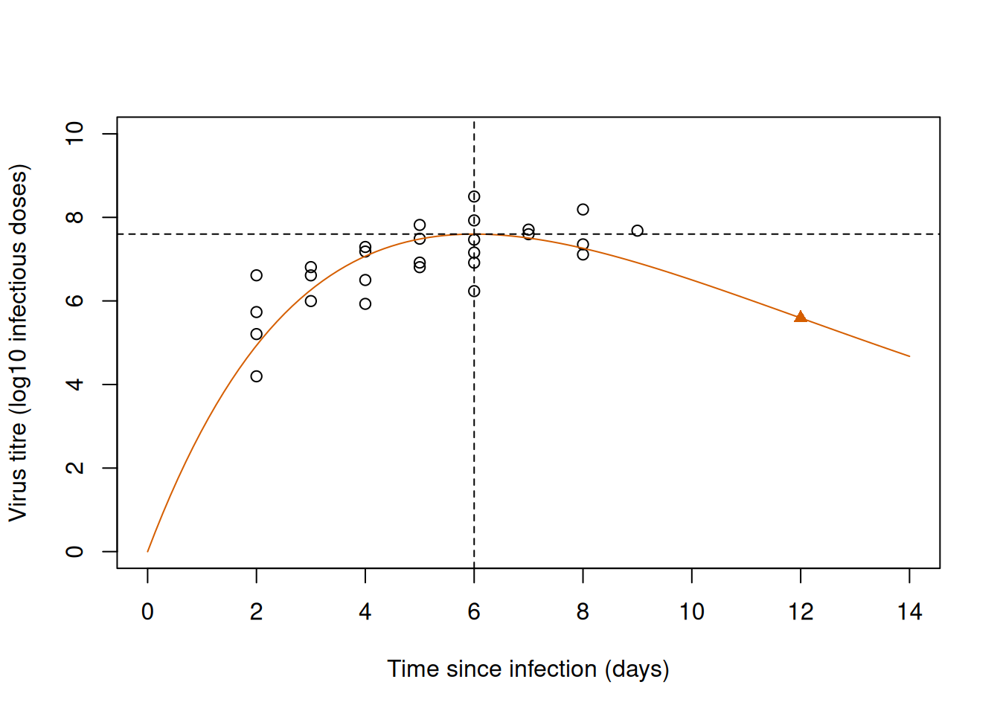

Exercise 1 analyses one function from end to end, with data on the amount of virus in the blood of infected rabbits. Exercises 2 to 5 are drills without data, one for each skill of the chapter: limits, derivatives, special points and parameters. Exercises 6 and 7 are cases with real data: the rate of an enzymatic reaction (the data set Puromycin, which comes with R), the fecundity of fir trees and the recruitment of a reef fish. The data of Exercises 1 and 7 are in the package emdbook, which you need to install once with install.packages("emdbook"). As in the theory, the curves are placed over the data by eye and nothing is fitted, which is the topic of Chapter 6.
Before you start, read the entries of the function supplement that the exercises name. If derivatives are no longer familiar, work through the calculus refresher first. Questions that start with “On paper” and the drills of Exercises 2 to 5 are meant to be done with pen and paper before you open R (a calculator is fine for logarithms and exponentials). Work through the first exercise before trying the remaining ones. The ideas and notation are introduced in the Chapter 5 theory.
1 Exercise 1: Virus titre in infected rabbits
The data set MyxoTiter_sum in the package emdbook contains the titre of the myxoma virus in the blood of European rabbits on different days after infection, for viruses of four grades (Fenner and McIntyre 1956; the values were read from a figure in Dwyer et al. 1990). The titre measures the concentration of virus and is expressed as the logarithm in base 10 of the number of rabbit infectious doses. We keep the 27 observations of grade 1, which were taken between 2 and 9 days after infection:
# Load the myxomatosis data from the emdbook package without attaching the package.data(MyxoTiter_sum, package ="emdbook")# Keep the observations of virus grade 1: their number and the days that they cover.grade_1 = MyxoTiter_sum[MyxoTiter_sum$grade ==1, ]nrow(grade_1)
[1] 27
range(grade_1$day)
[1] 2 9
A virus multiplies in its host until the immune response of the host catches up with it, so the titre rises from a low value, reaches a maximum and then declines. We describe this shape with the Ricker function,
\[
f(x)=a\,x\,e^{-bx},
\]
where \(x\) is the time since infection in days, \(f(x)\) is the titre, and \(a\) and \(b\) are positive parameters. In this exercise we find out everything that the formula can tell us about the curve, and then we use it to place the curve over the data by eye.
On paper, find the units of \(a\) and \(b\), the value of the function at \(x=0\) and its limit as \(x\to\infty\).
On paper, derive \(f'(x)\). What is the slope of the function at \(x=0\) and as \(x\to\infty\)? Find the location and the height of the peak.
On paper, derive \(f''(x)\) and find the inflection point. Where is the function concave and where is it convex?
Plot the titre against the day. Read the location and the height of the peak from the plot and calculate \(a\) and \(b\) from them, with their units.
Write the function in R and draw it over the data, marking the peak and the inflection point. Check the peak with which.max() and the derivative at day 2 with D().
1.1 Solution
1.1.1 Question 1
The units follow from the two rules of the theory. The argument of an exponential has no units, so in \(e^{-bx}\) the parameter \(b\) must have the inverse units of \(x\): 1/day. The factor \(e^{-bx}\) then has no units either, so the product \(ax\) must have the units of \(f(x)\). As \(x\) is in days, \(a\) is in units of titre/day.
At \(x=0\) the function is \(f(0)=a\times0\times e^{0}=0\). As \(x\to\infty\) the factor \(x\) grows without bound while \(e^{-bx}\) goes to zero, so we have to find out which of the two wins. An exponential dominates any power of \(x\) (see Limits and asymptotes), so
The same result follows from L’Hôpital’s rule: the derivative of the numerator is \(a\) and that of the denominator is \(b\,e^{bx}\), and \(a/(b\,e^{bx})\to0\). So the function starts at zero and returns to zero, which is what a hump-shaped function has to do.
1.1.2 Question 2
The function is the product of \(g(x)=ax\) and \(h(x)=e^{-bx}\), with \(g'(x)=a\) and, by the rule for the exponential, \(h'(x)=-b\,e^{-bx}\). The product rule gives
At \(x=0\) the slope is \(f'(0)=a\). So \(a\) is the initial slope of the function, which agrees with its units (titre/day). As \(x\to\infty\) the slope goes to zero, by the same argument as in question 1, because the exponential dominates the factor \(1-bx\).
At the peak the slope is zero. Since \(a\) and \(e^{-bx}\) are positive, \(f'(x)=0\) only where \(1-bx=0\):
The slope is positive for \(x<1/b\) and negative for \(x>1/b\), so this critical point is a maximum. The location of the peak, \(1/b\), is in days, and its height is in units of titre, as it should be.
1.1.3 Question 3
We differentiate \(f'(x)=a(1-bx)e^{-bx}\), again with the product rule. The derivative of \(a(1-bx)\) is \(-ab\) and that of \(e^{-bx}\) is \(-b\,e^{-bx}\):
The second derivative is zero where \(2-bx=0\), that is, at \(x=2/b\), which is twice the location of the peak. For \(x<2/b\) it is negative, so the function is concave (it bends downwards), and for \(x>2/b\) it is positive, so the function is convex (it bends upwards). The sign changes at \(x=2/b\), which makes it an inflection point. The value of the function and its slope at that point are
# Titre against the day of the observation.plot(titer ~ day, data = grade_1,xlab ="Time since infection (days)", ylab ="Virus titre (log10 infectious doses)")

Figure 1: Titre of the myxoma virus of grade 1 in the blood of rabbits against the time since infection.
The titre increases from about 5.5 on day 2 and levels off between 7 and 8 from day 6 onwards. The observations do not show a clear decline, so the location of the peak can only be read roughly. We take a peak on day 6 with a titre of 7.6. With the two results of question 2 we can go from the peak to the parameters. From \(x_{\max}=1/b\),
\[
a=f(x_{\max})\,b\,e=\frac{7.6\times2.718}{6}\approx3.44 \text{ units of titre/day}.
\]
That is, a curve with this peak starts with a slope of 3.44 units of titre/day. Its inflection point is at \(2/b=12\) days, where the titre is \(2\times7.6/e\approx5.59\) and the slope is \(-3.44/e^2\approx-0.47\) units of titre/day. The observations end on day 9, so the inflection point lies outside the data.
1.1.5 Question 5
We write the function with the input first and the parameters after it, and draw it with the values of question 4 (Figure 2). The dashed lines mark the peak and the triangle marks the inflection point:
# Ricker function: initial slope a and rate b.ricker =function(x, a =1, b =1) { a * x *exp(-b * x)}# Parameters calculated from a peak on day 6 with a titre of 7.6.b_titre =1/6a_titre =7.6*exp(1) /6# The observations, with axes that start at zero and include the inflection point.plot(titer ~ day, data = grade_1, xlim =c(0, 14), ylim =c(0, 10),xlab ="Time since infection (days)", ylab ="Virus titre (log10 infectious doses)")# The curve, and dashed lines at the location and at the height of the peak.curve(ricker(x, a = a_titre, b = b_titre), add =TRUE, col ="#D55E00")abline(v =1/ b_titre, h =7.6, lty =2)# The inflection point: twice the location of the peak.points(x =2/ b_titre, y =ricker(2/ b_titre, a = a_titre, b = b_titre),pch =17, col ="#D55E00")

Figure 2: The same observations with a Ricker function whose parameters were calculated from a peak read by eye (a = 3.44, b = 1/6). Dashed lines mark the peak and the triangle marks the inflection point.
We can verify our math with R:
# Peak of the function on a fine grid of days: location and height.day_grid =seq(0, 14, by =0.001)titre_values =ricker(day_grid, a = a_titre, b = b_titre)day_grid[which.max(titre_values)]
[1] 6
max(titre_values)
[1] 7.6
# Derivative with D() and with the formula of question 2, on day 2.ricker_derivative =D(expression(a * x *exp(-b * x)), "x")ricker_derivative
a * exp(-b * x) - a * x * (exp(-b * x) * b)
eval(ricker_derivative, list(a = a_titre, b = b_titre, x =2))
[1] 1.644753
a_titre * (1- b_titre *2) *exp(-b_titre *2)
[1] 1.644753
# Value of the function on days 2, 9 and 12 (the inflection point).ricker(c(2, 9, 12), a = a_titre, b = b_titre)
[1] 4.934260 6.914450 5.591768
The highest value on the grid is 7.6 on day 6, as intended. D() does not simplify its result, but it returns the same slope as our formula: on day 2 the titre increases by 1.64 units of titre/day, about half of the initial slope. The value on day 12 is 5.59, as calculated on paper.
The curve passes through the middle of the observations between days 3 and 7. It gives a titre of 4.9 on day 2, a little below most of the observations of that day, and of 6.9 on day 9, where the observed titre is 7.7. The reason is the one that we met in the theory for the size of the tadpoles: in the Ricker function the parameter \(b\) sets both the location of the peak and the rate of the decline after it, so with a peak on day 6 the curve has to decline at a given rate, whether the observations do or not. A function with a third parameter, such as the generalised Ricker function, could separate the two. Whether the extra parameter is supported by the data is a question for Chapter 6, where the curves are fitted.
2 Exercise 2: Limits and end behaviour
The first thing to find out about a function is where it starts and where it ends. For each of the five functions below:
on paper, calculate the value of the function at the lower end of its domain and its limit as \(x\to\infty\), with their units;
on paper, find the simpler function that it resembles close to the lower end of its domain;
sketch the function by hand, and only then draw it with curve() to check your sketch.
The mean mass of a seedling (mg) as a function of the number of seedlings in a pot, \(x\): \(f(x)=\dfrac{480}{12+x}\).
The amount of nitrogen released from a crop residue (kg/ha) as a function of the time since it was ploughed in, \(x\) (weeks): \(f(x)=90\left(1-e^{-0.2x}\right)\).
The number of seeds removed by rodents in one night as a function of the density of seeds, \(x\) (seeds/m²): \(f(x)=\dfrac{30x^2}{100+x^2}\).
The number of eggs in the clutch of an insect as a function of the body mass of the female, \(x\) (mg), for \(x\ge5\): \(f(x)=2+\dfrac{10\,(x-5)}{15+(x-5)}\).
A function in which a power and an exponential compete, for \(x\ge0\): \(f(x)=0.5\,x^2e^{-0.4x}\). Compare its behaviour close to zero with that of a Ricker function.
3 Exercise 3: Derivatives and slopes
A derivative is the slope of a function, and it has the units of \(y\) divided by the units of \(x\). Do all the questions on paper, name the rule that you use at each step (the rules are in the calculus refresher), and give the units of every slope. The first three questions are the core of this exercise and the last two are extra practice. Questions 2 and 3 continue with functions of Exercise 2.
The body mass of a fish (g) as a function of its length \(x\) (cm) follows the power law\(f(x)=0.01\,x^3\). Derive \(f'(x)\) and calculate the mass and the slope for a fish of 20 cm. What are the units of the parameter 0.01?
For the saturating exponential function \(f(x)=a\left(1-e^{-bx}\right)\), derive \(f'(x)\) and show that it can be written as \(f'(x)=b\,(a-f(x))\). What does this say about how the function approaches its asymptote? For the nitrogen released from a crop residue (\(a=90\) kg/ha, \(b=0.2\)/week), calculate the slope at the start and at the time when half of the nitrogen has been released.
For the Holling type III function \(f(x)=\dfrac{ax^2}{b^2+x^2}\), derive \(f'(x)\). What is the slope at \(x=0\)? For the seeds removed by rodents (\(a=30\) seeds/night, \(b=10\) seeds/m²), calculate the slope at \(x=10\) seeds/m².
The shell length of a snail (mm) as a function of its age \(x\) (months) follows the Gompertz function \(f(x)=a\exp\left(-e^{-b(x-c)}\right)\) with \(a=24\) mm, \(b=0.3\)/month and \(c=4\) months. Derive \(f'(x)\) and write it in terms of \(f(x)\). Calculate the length and the growth rate of the snail at 4 months.
Derive the partial derivatives of the Ricker function \(f(x;a,b)=a\,x\,e^{-bx}\) with respect to \(a\) and with respect to \(b\), and calculate both for \(a=2\), \(b=0.5\) and \(x=2\). At which value of \(x\) does a small change in \(b\) move the curve most?
When you have finished, check your answers to questions 3 and 5 with D().
4 Exercise 4: Special points
The special points of a function (a peak, an inflection point, a half-maximum) are what we can read from a plot, so we need them as expressions of the parameters. Do all the questions on paper and give the units of every result. The first three questions are the core of this exercise and the last two are extra practice.
For the saturating exponential function \(f(x)=a\left(1-e^{-bx}\right)\), derive the half-maximum \(x_{1/2}\). Then show that the function reaches three quarters of its asymptote at \(2x_{1/2}\). Calculate both times for the nitrogen released from a crop residue in Exercise 2 (\(b=0.2\)/week).
The concentration of a pesticide in a soil falls from 8 to 2 mg/kg in 30 days. Assuming an exponential decay, \(f(x)=a\,e^{-bx}\), find its half-life, the rate \(b\) and the characteristic scale \(1/b\), with their units. What is the concentration after one characteristic scale?
The number of adult parasitoids that emerge from a caterpillar as a function of the number of eggs laid in it, \(x\), follows the Hassell function with an exponent of 2, \(f(x)=\dfrac{ax}{(b+x)^2}\). Derive \(f'(x)\) and find the location and the height of the peak as expressions of \(a\) and \(b\). Calculate them for \(a=1280\) and \(b=40\) eggs. What is the initial slope?
For the Holling type III function \(f(x)=\dfrac{ax^2}{b^2+x^2}\), start from the derivative that you found in Exercise 3 and derive \(f''(x)\). Find the inflection point, and the value and the slope of the function there. Calculate them for the seeds removed by rodents (\(a=30\) seeds/night, \(b=10\) seeds/m²).
The intake of a herbivore (g/min) as a function of the biomass of the vegetation, \(x\) (g/m²), follows the Holling type IV function \(f(x)=\dfrac{ax^2}{b+cx+x^2}\) with \(a=12\), \(b=100\) and \(c=-10\). Find the location and the height of the peak, using the fact that a quotient is zero where its numerator is zero. Compare the height of the peak with the limit of the function as \(x\to\infty\).
When you have finished, check the peaks of questions 3 and 5 with which.max() on a fine grid of values of \(x\).
5 Exercise 5: Parameters
The same curve can be written with different parameters, and a curve can be moved, stretched and bounded by changing its formula (see Parameters and Building new functions in the theory). Do all the questions on paper and give the units of every parameter. The first three questions are the core of this exercise and the last two are extra practice.
A wolf spider searches an area of \(\alpha=2\) m²/day for prey and needs \(H=0.05\) days to handle each prey. Write its functional response in the Holling type II form, \(f(x)=\dfrac{\alpha x}{1+\alpha Hx}\), where \(x\) is the density of prey (prey/m²), and convert it to the Michaelis–Menten form, \(f(x)=\dfrac{ax}{b+x}\). What are \(a\) and \(b\), and what do they mean? A second species has \(a=50\) prey/day and \(b=25\) prey/m². What are its \(\alpha\) and \(H\)?
Rewrite the Ricker function \(f(x)=a\,x\,e^{-bx}\) so that its two parameters are the location of the peak, \(x_{\max}\), and the height of the peak, \(y_{\max}\). What are \(x_{\max}\) and \(y_{\max}\) for \(f(x)=8\,x\,e^{-0.25x}\)?
A plant does not flower until it has a mass of 2 g, at which it carries 3 flowers. The number of flowers then increases with the mass of the plant, \(x\) (g), and approaches 27 for the heaviest plants. It is halfway between 3 and 27 at a mass of 10 g. Write the formula of a shifted and scaled Michaelis–Menten function with these properties, for \(x\ge2\).
The probability that a plant species occurs at a site as a function of the pH of the soil, \(x\), is described with the composition \(f(x)=\operatorname{logit}^{-1}\left[d-b\,(x-c)^2\right]\) with \(d=2\), \(b=0.5\) and \(c=6\). What is the range of the function? Where is its peak and how high is it? At which values of the pH is the probability 0.5?
Show that the Shepherd function \(f(x)=\dfrac{ax}{b+x^c}\) contains the Michaelis–Menten function, and that the Richards function \(f(x)=\dfrac{a}{\left[1+d\,e^{-b(x-c)}\right]^{1/d}}\) contains the logistic function. Which function does the Richards function become for \(d=-1\)?
When you have finished, check your answers to questions 1 and 2 in R by evaluating both forms of each function at a few values of \(x\).
6 Exercise 6: Enzyme kinetics
The data set Puromycin of base R contains the rate of an enzymatic reaction (rate, in counts/min/min) at six concentrations of the substrate (conc, in parts per million, ppm), measured in cells that were treated with the antibiotic puromycin (12 observations) and in untreated cells (11 observations) (Treloar 1974, in Bates and Watts 1988). The column state says to which of the two groups an observation belongs. Load the data with data(Puromycin, package = "datasets").
This is the kind of experiment for which Michaelis and Menten proposed their function, \(f(x)=\dfrac{ax}{b+x}\), where \(x\) is the concentration of the substrate and \(f(x)\) is the rate of the reaction (see the Michaelis–Menten entry of the supplement). In this exercise you place the curve by eye and compare it with an alternative function.
Plot the rate against the concentration, with a different symbol for each state. Read \(a\) and \(b\) from the plot for each state, with their units, and draw the two curves over the data. Which of the two parameters differs between the states?
On paper, calculate the initial slope of the curve of the treated cells, with its units. The saturating exponential function \(g(x)=a\left(1-e^{-b_gx}\right)\) has the same shape as the Michaelis–Menten function. Find the rate \(b_g\) for which it has the same asymptote and the same initial slope as the curve of the treated cells. Which fraction of the asymptote does each function reach at \(x=b\)? In R, draw both curves and find the concentration at which they differ most.
7 Exercise 7: Choosing functions for fecundity and for recruitment
This exercise uses two data sets of the package emdbook, with a different shape each.
Part A. The data set FirDBHFec_sum contains the diameter at breast height (DBH, in cm) and the fecundity (fecundity) of 333 balsam fir trees (Abies balsamea) on Whiteface Mountain, New York (Silvertown and Dodd 1999; Dodd and Silvertown 2000). Fecundity was measured as the number of cone rachises on a tree: the rachis is the axis of a cone, which stays on the branch after the cone has fallen apart. Load the data with data(FirDBHFec_sum, package = "emdbook").
The diameter of some trees is missing. Count those trees and remove them explicitly. Plot fecundity against diameter and describe the shape of the relationship.
On paper, explain why a power law, \(f(x)=ax^b\), is a candidate for these data. Read two points from the curve that you would draw through the middle of the cloud and calculate \(b\) and \(a\) from them. What are the units of \(a\)? Draw the curve over the data.
On paper, calculate by which factor the fecundity changes when the diameter doubles. Which measure of the size of a tree is proportional to the square of its diameter?
Part B. The data set DamselRecruitment_sum comes from a field experiment with the three-spot damselfish Dascyllus trimaculatus, whose larvae settle on sea anemones (Schmitt, Holbrook and Osenberg 1999). Each of the 11 rows is a target density of settlers: settler.den is the density of settlers and surv.den is the mean density of survivors after six months, both as the number of fish per 0.1 m² of anemone. Load the data with data(DamselRecruitment_sum, package = "emdbook").
Plot the density of survivors against the density of settlers. Read starting values for a Michaelis–Menten function from the plot, with their units, and draw the curve. Compare its initial slope with the fraction of the settlers that survived at the lowest densities.
Write a hockey stick function with ifelse(), choose its two parameters by eye and add it to the plot. Where does it describe the data differently from the Michaelis–Menten function?
The Shepherd function can be written as \(f(x)=\dfrac{sx}{1+(x/k)^c}\), where \(s\) is the initial slope, \(k\) is a scale parameter and \(c\) is an exponent. Write it in R, give \(s\) and \(k\) the values that correspond to your Michaelis–Menten function, and draw it for \(c=0.8\), \(c=1\) and \(c=1.2\). What does \(c\) change, and which part of the data can tell us about it?
Which of the three functions are nested? What would you need in order to choose among them?